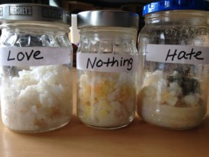
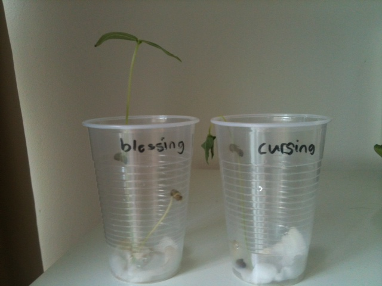
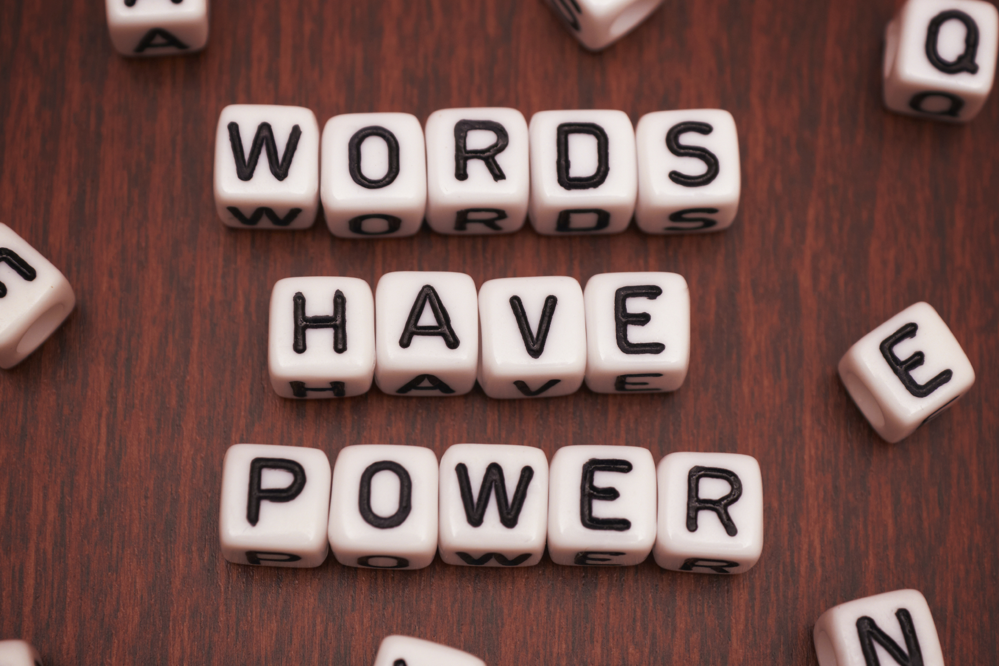
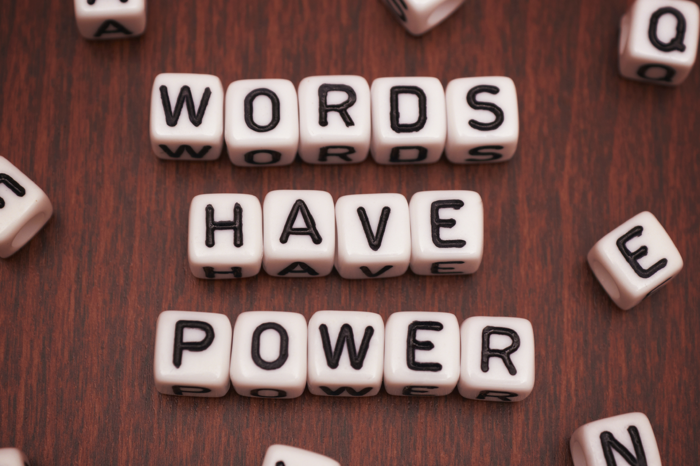

sticks and stones may break my bones but words will never hurt me
Masaru Emoto a researcher had conducted a experiment on water. According to him water holds memory meaning it can pick up our feelings emotions or vibration since every thing is made up of molecules and atoms constantly in motion vibrating. we are a vibrational beings. Not to mention we are made up of 70% of water lets keep that in mind.
we all feel a certain way by music you can either be moved by it feel uplifted great or feel sad all through words.water reacts differently from various emotions or vibrations holds onto it as if it is recieving your emotions verbally or concentrated thoughts.

During Masaru Emoto's experiment he had several samples of water from different regions and places. Not all the samples froze but however the ones that did were a no shocker to him. The water samples that did manage to freeze were put under a micsroscope for further inspection. All different kinds of patterns and just the way each crystalized different from one another was suprising.

water samples of water from clear springs that were exposed to postive thoughts loving words formed more pleasing crystallization patterns. very uniform and almost apearing like snowflakes.
On the other hand water samples from polluted regions have been negleted exposed to just negativity and harsh thoughts. They did freeze but being inspected underneath the microscope reaveled that it did not freeze in the most appealing way all over the place no uniform pattern.

This Experiment displays the results that negativity or positivity can influence you and things around. This experiment has been done on other objects such as plants on rice with words attached to the jars. Every time shows that the objects with positive loving attentions and thoughts turn out to be the ones with the least harm and just in the best shape compared to the negative intentions to objects.


 
